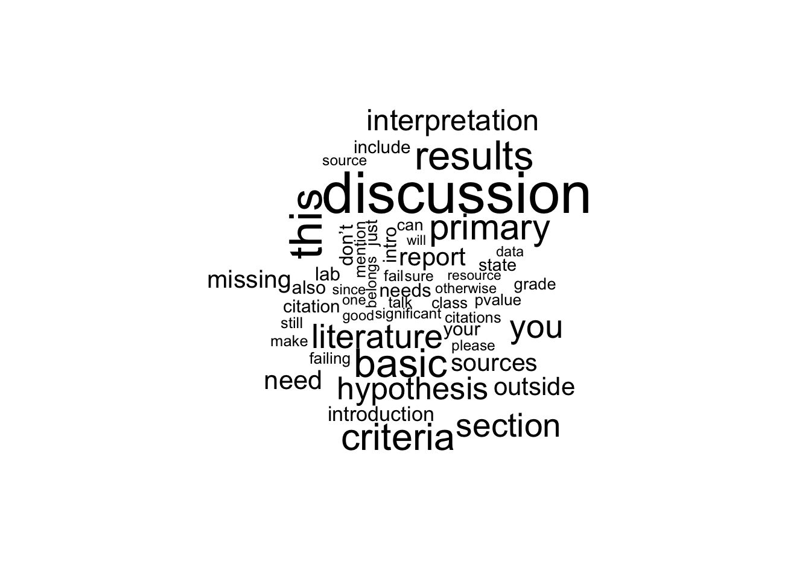
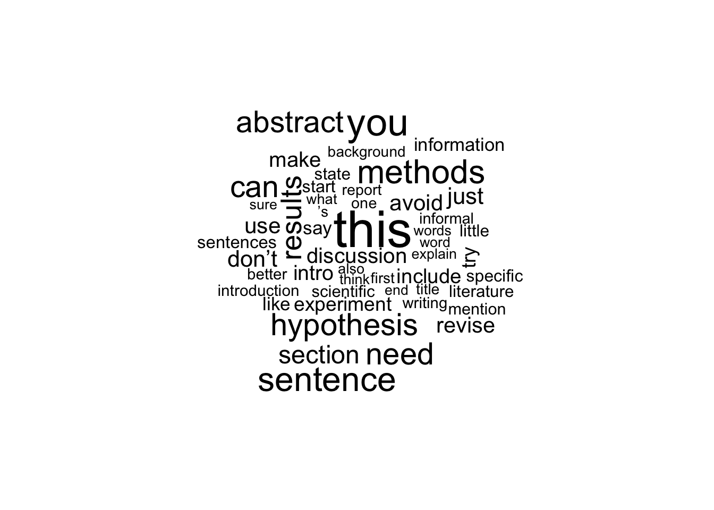
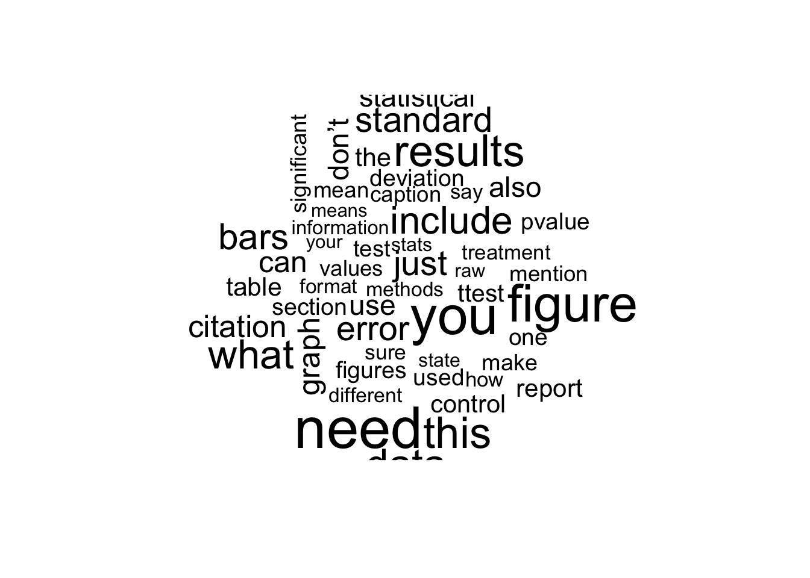
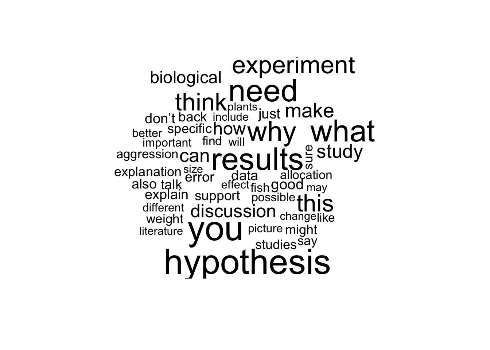
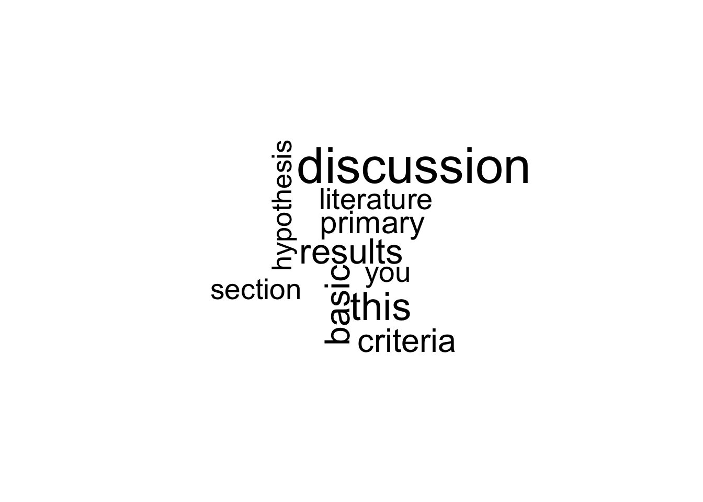
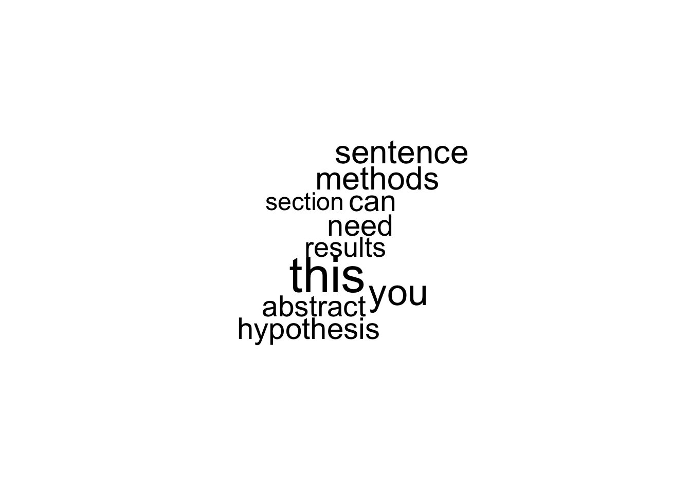
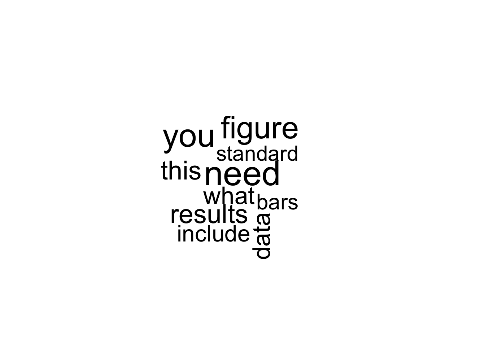
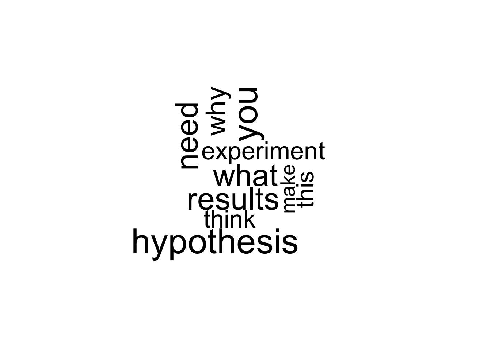

Naive Bayes Workflow
Dan Johnson
12/21/2018
Summary
This notebook documents a basic workflow for applying a naive Bayes model to terms in TA comments. I based it on a tutorial https://rpubs.com/Billyhansen6/318412. This is quoted from Hansen’s original tutorial: >The objective of this project is to classify SMS messages as spam or ham (not spam). A Naive Bayes classifier approach will be used. This example is taken from chapter 4 of Machine Learning with R, Second Edition"
An example of the conditional probability that will be computed is as follows:
\[P(Spam|Hospital) = P(Hospital|Spam)P(Spam)/P(Hospital)\]
which is the formula for determining the probability that a message is spam given that it contains the word “Hospital” in the message.
Lines ~30-205 are the baseline version of the workflow using single words. It correctly classifies comments in the top 4 sub-categories ~79% of the time. While that is close to minimum acceptable inter-rater reliability of two human readers, it is well below my goal of >95% for use in routine automated analysis.
Lines ~208-290 describe an alternative method using n-grams. When I tested this approach using 2-grams, classification was slightly worse, at 68.3% correct.
Lines ~295-335 show how to use word clouds to visualize single word frequencies. I did not find this approach very useful.
To keep this code clean for now I will run various permutations in a scratch version, then summarize findings starting on line #345. In these subsequent iterations I will evaluate:
- Different text pre-processing strategies: stemmed versus unstemmed, numbers removed vs. not, etc.
- Using n-grams rather than single words
- Making pair-wise comparison versus comparing multiple groups simultaneously
- Modifying the variables in the NB analysis itself.
Finally, there are several things still missing or needed for this workflow:
- How to feed a text dataset in, and get a table of the predicted categories back out.
- How to store the values from the Bayes prediction table so I can use them in calculations rather than type them in by hand.
- How to randomize which comments are used for training, testing datasets.
Initial Setup
library(tidyverse)## ── Attaching packages ───────────────────────────────────────────────────────── tidyverse 1.2.1 ──## ✔ ggplot2 2.2.1 ✔ purrr 0.2.4
## ✔ tibble 1.4.2 ✔ dplyr 0.7.4
## ✔ tidyr 0.8.0 ✔ stringr 1.3.0
## ✔ readr 1.1.1 ✔ forcats 0.3.0## ── Conflicts ──────────────────────────────────────────────────────────── tidyverse_conflicts() ──
## ✖ dplyr::filter() masks stats::filter()
## ✖ dplyr::lag() masks stats::lag()library(tidytext)
library(tidyr)
library(tm)## Loading required package: NLP##
## Attaching package: 'NLP'## The following object is masked from 'package:ggplot2':
##
## annotatelibrary(SnowballC)
library(wordcloud)## Loading required package: RColorBrewerlibrary(e1071)
library(gmodels)Baseline Version 1.0 of Naive Bayes (NB) Protocol
Initial Data Input
#Read in TA comments from CSV file.
base_data <- read_csv(file='data/coded_full_comments_dataset_Spring18anon.csv')## Parsed with column specification:
## cols(
## .default = col_character(),
## sort = col_integer(),
## course = col_integer(),
## Rank = col_integer()
## )## See spec(...) for full column specifications.#Select rows representing the sub-groups to compare.
comments_subset <- filter(base_data,code.subject=="1. Basic Criteria"|code.subject=="2. Writing Quality"|code.subject=="3. Technical and Scientific"|code.subject=="4. Logic and Thinking")
#Reduce larger dataframe to 2 required columns of data, and put columns in order needed.
comments_raw <- comments_subset %>% select(23,22)
#Rename the columns.
names(comments_raw)[1] <- "type"
names(comments_raw)[2] <- "text"
#Simplify coding terms
comments_raw[,1] <- ifelse(comments_raw[,1] == "1. Basic Criteria","1_Basic", ifelse(comments_raw[,1] == "2. Writing Quality","2_Writing", ifelse(comments_raw[,1] == "3. Technical and Scientific","3_Technical", ifelse(comments_raw[,1] == "4. Logic and Thinking","4_Logic",99))))
#Change "type" element from character to a factor for analysis.
comments_raw$type <- factor(comments_raw$type)
str(comments_raw$type)## Factor w/ 4 levels "1_Basic","2_Writing",..: 3 2 3 3 3 3 4 4 4 3 ...table(comments_raw$type)##
## 1_Basic 2_Writing 3_Technical 4_Logic
## 211 2578 5409 1142Data set must be converted to a volative corpus using “tm” library then transformed.
#Create the volatile coprus that contains the "text" vector from data frame.
comments_corpus <- VCorpus(VectorSource(comments_raw$text))
print(comments_corpus)## <<VCorpus>>
## Metadata: corpus specific: 0, document level (indexed): 0
## Content: documents: 9340#Check out the first few messages in the new corpus, which is basically a list that can be manipulated with list operations.
inspect(comments_corpus[1:3])## <<VCorpus>>
## Metadata: corpus specific: 0, document level (indexed): 0
## Content: documents: 3
##
## [[1]]
## <<PlainTextDocument>>
## Metadata: 7
## Content: chars: 15
##
## [[2]]
## <<PlainTextDocument>>
## Metadata: 7
## Content: chars: 31
##
## [[3]]
## <<PlainTextDocument>>
## Metadata: 7
## Content: chars: 70#Use "as.character" function to see what a message looks like.
as.character(comments_corpus[[3]])## [1] "Is this the most concise way to communicate no significant difference?"The OPTIONAL data transforms using “tm_map”" and “content_transformer” functions. Switch between “{r}” and “{}” to turn a transformation block off or on.
#Convert to all lower case letters.
comments_corpus_clean <- tm_map(comments_corpus, content_transformer(tolower))#Remove numbers.
comments_corpus_clean <- tm_map(comments_corpus_clean, removeNumbers)#Stopword removal.
comments_corpus_clean <- tm_map(comments_corpus_clean, removeWords, stopwords())#Remove punctuation using the "removePunctuation" function.
#This step removes evidence of questions, so may remove data.
comments_corpus_clean <- tm_map(comments_corpus_clean, removePunctuation)#Stemming the text data to strip the suffix from words.
comments_corpus_clean <- tm_map(comments_corpus_clean, stemDocument)Final prep and data check.
#Final step removes white space from the document. This is NOT optional.
comments_corpus_clean <- tm_map(comments_corpus_clean, stripWhitespace)
#Look at an example of data.
as.character((comments_corpus_clean[[3]]))## [1] "concis way communic signific differ"Basic Tokenizer
This version uses the “DocumentTermMatrix” function to creates a matrix in which the rows indicate individual documents (individual TA comments) and the columns indicate presence or absence of the word that is the header for the column. Be careful not to confuse it with “TermDocumentMatrix”, which transposes the matrix.
“DocumentTermMaxtrix” function also can perform all of the text prep above in one command.
comments_corpus_1gram <- DocumentTermMatrix(comments_corpus_clean)
comments_corpus_1gram_tidy <- tidy(comments_corpus_1gram)
inspect(comments_corpus_1gram)## <<DocumentTermMatrix (documents: 9340, terms: 3340)>>
## Non-/sparse entries: 61737/31133863
## Sparsity : 100%
## Maximal term length: 66
## Weighting : term frequency (tf)
## Sample :
## Terms
## Docs can data figur hypothesi includ just need result sentenc use
## 1499 0 1 0 0 1 0 1 0 1 1
## 2986 0 0 1 0 3 1 0 3 0 0
## 3187 1 1 2 0 0 0 0 1 0 0
## 4079 0 1 2 0 0 0 1 0 0 0
## 6239 1 2 4 0 0 0 1 0 0 1
## 6288 1 1 0 0 3 0 1 0 0 1
## 7974 3 0 0 0 0 0 0 0 0 0
## 8990 1 0 0 1 1 1 0 0 1 2
## 9149 1 2 0 0 0 1 0 0 1 1
## 9156 0 0 0 1 1 0 0 0 0 0Data Preparation
Split data into 75% training and 25% testing sets, so that after Naive Bayes spam filter algorithm is built it can be applied to unseen data.
.75 * 9340 #Number of documents/rows in the dataset; product is #rows for training## [1] 7005.25 * 9340 #Product is #rows for testing set## [1] 2335This code assumes comments are random. Probably want to try randomizing them.
comments_dtm_train <- comments_corpus_1gram[1:7005, ]
comments_dtm_test <- comments_corpus_1gram[7006:9340, ]Save vectors labeling rows in the training and testing vectors
comments_train_labels <- comments_raw[1:7005, ]$type
comments_test_labels <- comments_raw[7006:9340,]$typeMake sure that the proportion of each sub-category is similar in the training and testing data set.
prop.table(table(comments_train_labels))## comments_train_labels
## 1_Basic 2_Writing 3_Technical 4_Logic
## 0.02212705 0.27908637 0.57787295 0.12091363prop.table(table(comments_test_labels))## comments_test_labels
## 1_Basic 2_Writing 3_Technical 4_Logic
## 0.02398287 0.26680942 0.58286938 0.12633833Preparation for Naive Bayes
Remove words from the matrix that appear less than 5 times.
comments_freq_words <- findFreqTerms(comments_dtm_train, 5)
str(comments_freq_words)## chr [1:1043] "’ll" "’re" "’ve" "“correct”" "“figur" "“group" ...Limit our Document Term Matrix to only include words in the sms_freq_vector. We want all the rows, but we want to limit the column to these words in the frequency vector.
comments_dtm_freq_train <- comments_dtm_train[ , comments_freq_words]
comments_dtm_freq_test <- comments_dtm_test[ , comments_freq_words]The naive bayes classifier works with categorical features, so we need to convert the matrix to “yes” and “no” categorical variables. To do this we’ll build a convert_counts function and apply it to our data.
convert_counts2 <- function(x) {
x <- ifelse(x > 0, "Yes", "No")
}This replaces values greater than 0 with yes, and values not greater than 0 with no. Let’s apply it to our data.
comments_train <- apply(comments_dtm_freq_train, MARGIN = 2, convert_counts2)
comments_test <- apply(comments_dtm_freq_test, MARGIN = 2, convert_counts2)The resulting matrixes will be character type, with cells indicating “yes” or “no” if the word represented by the column appears in the message represented by the row.
Train Model, Predict, Evaluate
Use the e1071 package to implement Naive Bayes algorithm on the data, and predict whether a message is likely to be in group ONE, TWO, THREE, or FOUR. Evaluate the prediction with the actual data using a crosstable from the gmodels package.
comments_classifier <- naiveBayes(comments_train, comments_train_labels)
comments_test_pred <- predict(comments_classifier, comments_test)
CrossTable(comments_test_pred, comments_test_labels, prop.chisq = FALSE, prop.t = FALSE, dnn = c('predicted', 'actual'))##
##
## Cell Contents
## |-------------------------|
## | N |
## | N / Row Total |
## | N / Col Total |
## |-------------------------|
##
##
## Total Observations in Table: 2335
##
##
## | actual
## predicted | 1_Basic | 2_Writing | 3_Technical | 4_Logic | Row Total |
## -------------|-------------|-------------|-------------|-------------|-------------|
## 1_Basic | 42 | 10 | 23 | 6 | 81 |
## | 0.519 | 0.123 | 0.284 | 0.074 | 0.035 |
## | 0.750 | 0.016 | 0.017 | 0.020 | |
## -------------|-------------|-------------|-------------|-------------|-------------|
## 2_Writing | 5 | 449 | 95 | 60 | 609 |
## | 0.008 | 0.737 | 0.156 | 0.099 | 0.261 |
## | 0.089 | 0.721 | 0.070 | 0.203 | |
## -------------|-------------|-------------|-------------|-------------|-------------|
## 3_Technical | 8 | 106 | 1185 | 43 | 1342 |
## | 0.006 | 0.079 | 0.883 | 0.032 | 0.575 |
## | 0.143 | 0.170 | 0.871 | 0.146 | |
## -------------|-------------|-------------|-------------|-------------|-------------|
## 4_Logic | 1 | 58 | 58 | 186 | 303 |
## | 0.003 | 0.191 | 0.191 | 0.614 | 0.130 |
## | 0.018 | 0.093 | 0.043 | 0.631 | |
## -------------|-------------|-------------|-------------|-------------|-------------|
## Column Total | 56 | 623 | 1361 | 295 | 2335 |
## | 0.024 | 0.267 | 0.583 | 0.126 | |
## -------------|-------------|-------------|-------------|-------------|-------------|
##
## Calculate overall correct prediction rate.
(42+454+1186+185)/23.35## [1] 79.95717Modified Naive Bayes (NB) Method Using N-grams
The tokenizer command block above only works for single words. The block below uses tm’s NLP commands to generate either 1-, 2-, or 3-grams with the same command. The only change needed is “#” in “(words(x), #)” below. For simplicity I left off all of the preparatory code up leading up to the final cleaned corpus.
NLP_Tokenizer <- function(x) {
unlist(lapply(ngrams(words(x), 2), paste, collapse = " "), use.names = FALSE)
}
comments_dtm_2gram <- DocumentTermMatrix(comments_corpus_clean, control=list(tokenize = NLP_Tokenizer))
comments_dtm_2gram_tidy <- tidy(comments_dtm_2gram)
inspect(comments_dtm_2gram)## <<DocumentTermMatrix (documents: 9340, terms: 30478)>>
## Non-/sparse entries: 58317/284606203
## Sparsity : 100%
## Maximal term length: 71
## Weighting : term frequency (tf)
## Sample :
## Terms
## Docs citat format don’t need error bar figur caption make sure
## 1499 0 1 0 0 0
## 2986 0 0 0 0 0
## 3187 0 0 0 0 0
## 4079 0 0 2 0 0
## 6239 0 0 0 0 0
## 6288 0 0 0 0 0
## 7974 0 0 0 0 0
## 8990 0 0 0 0 0
## 9149 0 0 0 0 0
## 9156 0 0 0 0 0
## Terms
## Docs method section primari literatur raw data standard deviat
## 1499 0 0 0 0
## 2986 0 0 0 0
## 3187 0 0 0 0
## 4079 0 0 0 1
## 6239 0 0 0 0
## 6288 0 0 0 0
## 7974 0 0 0 0
## 8990 0 0 0 0
## 9149 1 0 0 0
## 9156 0 0 0 0
## Terms
## Docs statist test
## 1499 0
## 2986 0
## 3187 0
## 4079 0
## 6239 0
## 6288 0
## 7974 0
## 8990 0
## 9149 2
## 9156 0Data Preparation
Split data into 75% training and 25% testing sets, so that after Naive Bayes spam filter algorithm is built it can be applied to unseen data.
.75 * 9340 #Number of rows in the dataset; product is #rows for training## [1] 7005.25 * 9340 #Product is #rows for testing set## [1] 2335This code assumes comments are random. Probably want to try randomizing them.
comments_dtm_train <- comments_dtm_2gram[1:7005, ]
comments_dtm_test <- comments_dtm_2gram[7006:9340, ]Save vectors labeling rows in the training and testing vectors
comments_train_labels <- comments_raw[1:7005, ]$type
comments_test_labels <- comments_raw[7006:9340,]$typeMake sure that the proportion of each sub-category is similar in the training and testing data set.
prop.table(table(comments_train_labels))## comments_train_labels
## 1_Basic 2_Writing 3_Technical 4_Logic
## 0.02212705 0.27908637 0.57787295 0.12091363prop.table(table(comments_test_labels))## comments_test_labels
## 1_Basic 2_Writing 3_Technical 4_Logic
## 0.02398287 0.26680942 0.58286938 0.12633833Preparation for Naive Bayes
Remove words from the matrix that appear less than 5 times.
comments_freq_words <- findFreqTerms(comments_dtm_train, 5)
str(comments_freq_words)## chr [1:1323] "– ’s" "’m assum" "’m confus" "’m sure" "’re go" ...Limit our Document Term Matrix to only include words in the sms_freq_vector. We want all the rows, but we want to limit the column to these words in the frequency vector.
comments_dtm_freq_train <- comments_dtm_train[ , comments_freq_words]
comments_dtm_freq_test <- comments_dtm_test[ , comments_freq_words]The naive bayes classifier works with categorical features, so we need to convert the matrix to “yes” and “no” categorical variables. To do this we’ll build a convert_counts function and apply it to our data.
convert_counts2 <- function(x) {
x <- ifelse(x > 0, "Yes", "No")
}This replaces values greater than 0 with yes, and values not greater than 0 with no. Let’s apply it to our data.
comments_train <- apply(comments_dtm_freq_train, MARGIN = 2, convert_counts2)
comments_test <- apply(comments_dtm_freq_test, MARGIN = 2, convert_counts2)The resulting matrixes will be character type, with cells indicating “yes” or “no” if the word represented by the column appears in the message represented by the row.
Train Model, Predict, Evaluate
Use the e1071 package to implement Naive Bayes algorithm on the data, and predict whether a message is likely to be in group ONE, TWO, THREE, or FOUR. Evaluate the prediction with the actual data using a crosstable from the gmodels package.
comments_classifier <- naiveBayes(comments_train, comments_train_labels)
comments_test_pred <- predict(comments_classifier, comments_test)
CrossTable(comments_test_pred, comments_test_labels, prop.chisq = FALSE, prop.t = FALSE, dnn = c('predicted', 'actual'))##
##
## Cell Contents
## |-------------------------|
## | N |
## | N / Row Total |
## | N / Col Total |
## |-------------------------|
##
##
## Total Observations in Table: 2335
##
##
## | actual
## predicted | 1_Basic | 2_Writing | 3_Technical | 4_Logic | Row Total |
## -------------|-------------|-------------|-------------|-------------|-------------|
## 1_Basic | 37 | 5 | 17 | 1 | 60 |
## | 0.617 | 0.083 | 0.283 | 0.017 | 0.026 |
## | 0.661 | 0.008 | 0.012 | 0.003 | |
## -------------|-------------|-------------|-------------|-------------|-------------|
## 2_Writing | 3 | 239 | 73 | 41 | 356 |
## | 0.008 | 0.671 | 0.205 | 0.115 | 0.152 |
## | 0.054 | 0.384 | 0.054 | 0.139 | |
## -------------|-------------|-------------|-------------|-------------|-------------|
## 3_Technical | 14 | 327 | 1234 | 142 | 1717 |
## | 0.008 | 0.190 | 0.719 | 0.083 | 0.735 |
## | 0.250 | 0.525 | 0.907 | 0.481 | |
## -------------|-------------|-------------|-------------|-------------|-------------|
## 4_Logic | 2 | 52 | 37 | 111 | 202 |
## | 0.010 | 0.257 | 0.183 | 0.550 | 0.087 |
## | 0.036 | 0.083 | 0.027 | 0.376 | |
## -------------|-------------|-------------|-------------|-------------|-------------|
## Column Total | 56 | 623 | 1361 | 295 | 2335 |
## | 0.024 | 0.267 | 0.583 | 0.126 | |
## -------------|-------------|-------------|-------------|-------------|-------------|
##
## (34+214+1254+94)/23.35## [1] 68.35118Visualization
This code generates a wordcloud of the frequency of single words in the dataset using the package “wordcloud”.
wordcloud(comments_corpus_clean, max.words = 50, random.order = FALSE)
Compare wordclouds between 3 groups.
ONE <- subset(comments_raw, type == "1_Basic")
TWO <- subset(comments_raw, type == "2_Writing")
THREE <- subset(comments_raw, type == "3_Technical")
FOUR <- subset(comments_raw, type == "4_Logic")
wordcloud(ONE$text, max.words = 50, scale = c(3, 0.5))## Warning in tm_map.SimpleCorpus(corpus, tm::removePunctuation):
## transformation drops documents## Warning in tm_map.SimpleCorpus(corpus, function(x) tm::removeWords(x,
## tm::stopwords())): transformation drops documents
wordcloud(TWO$text, max.words = 50, scale = c(3, 0.5))## Warning in tm_map.SimpleCorpus(corpus, tm::removePunctuation):
## transformation drops documents
## Warning in tm_map.SimpleCorpus(corpus, tm::removePunctuation):
## transformation drops documents
wordcloud(THREE$text, max.words = 50, scale = c(3, 0.5))## Warning in tm_map.SimpleCorpus(corpus, tm::removePunctuation):
## transformation drops documents
## Warning in tm_map.SimpleCorpus(corpus, tm::removePunctuation):
## transformation drops documents
wordcloud(FOUR$text, max.words = 50, scale = c(3, 0.5))## Warning in tm_map.SimpleCorpus(corpus, tm::removePunctuation):
## transformation drops documents
## Warning in tm_map.SimpleCorpus(corpus, tm::removePunctuation):
## transformation drops documents
Show the 5 most frequent words in the data:
comment_sack <- TermDocumentMatrix(comments_corpus_clean)
comment_pack <- as.matrix(comment_sack)
comment_snack <- sort(rowSums(comment_pack), decreasing = TRUE)
comment_hack <- data.frame(word = names(comment_snack), freq=comment_snack)
head(comment_hack, 10)And the 5 most frequent words from each class:
wordcloud(ONE$text, max.words = 10, scale = c(3, 0.5))## Warning in tm_map.SimpleCorpus(corpus, tm::removePunctuation):
## transformation drops documents## Warning in tm_map.SimpleCorpus(corpus, function(x) tm::removeWords(x,
## tm::stopwords())): transformation drops documents
wordcloud(TWO$text, max.words = 10, scale = c(3, 0.5))## Warning in tm_map.SimpleCorpus(corpus, tm::removePunctuation):
## transformation drops documents
## Warning in tm_map.SimpleCorpus(corpus, tm::removePunctuation):
## transformation drops documents
wordcloud(THREE$text, max.words = 10, scale = c(3, 0.5))## Warning in tm_map.SimpleCorpus(corpus, tm::removePunctuation):
## transformation drops documents
## Warning in tm_map.SimpleCorpus(corpus, tm::removePunctuation):
## transformation drops documents
wordcloud(FOUR$text, max.words = 10, scale = c(3, 0.5))## Warning in tm_map.SimpleCorpus(corpus, tm::removePunctuation):
## transformation drops documents
## Warning in tm_map.SimpleCorpus(corpus, tm::removePunctuation):
## transformation drops documents
Permutation Tests of Naive Bayes (NB) Method
Version 1.0 correctly identifies comment subcategories ~79% of the time when using single words, and 68.3% of the time when using 2-grams. Permutations to test:
- Compare 2-grams, 3-grams rather than single words
- Make pair-wise comparisons versus comparing multiple groups simultaneously.
- Ex.: Basic vs. Not Basic (1_Basic vs. not 1_Basic)
- Modify the variables within the NB analysis itself.
- Laplace constant (Y/N), Cutoff value for words removed from list.
- Do/Do not stem the terms
- This may remove evidence of tense
- Remove/Leave stopwords
- Remove/Leave capitalization
- Remove/Leave numbers
- This may remove evidence of technical descriptors
- Remove/Leave punctuation
- This may remove evidence of questions vs statements
Copyright © 2018 A. Daniel Johnson. All rights reserved.